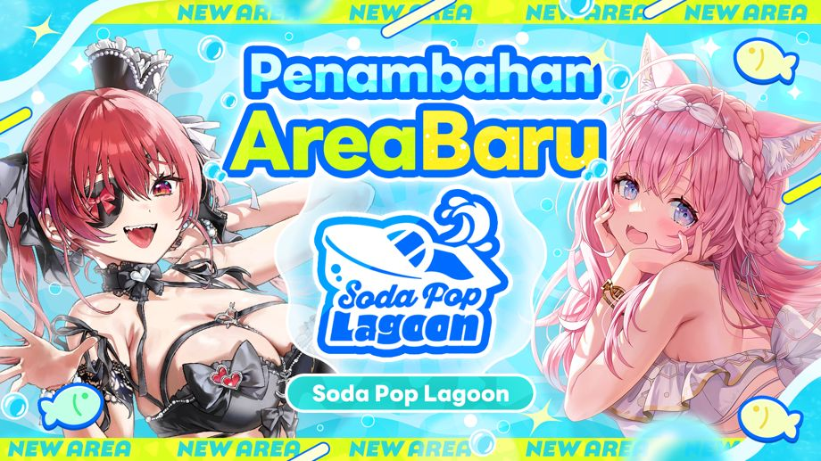
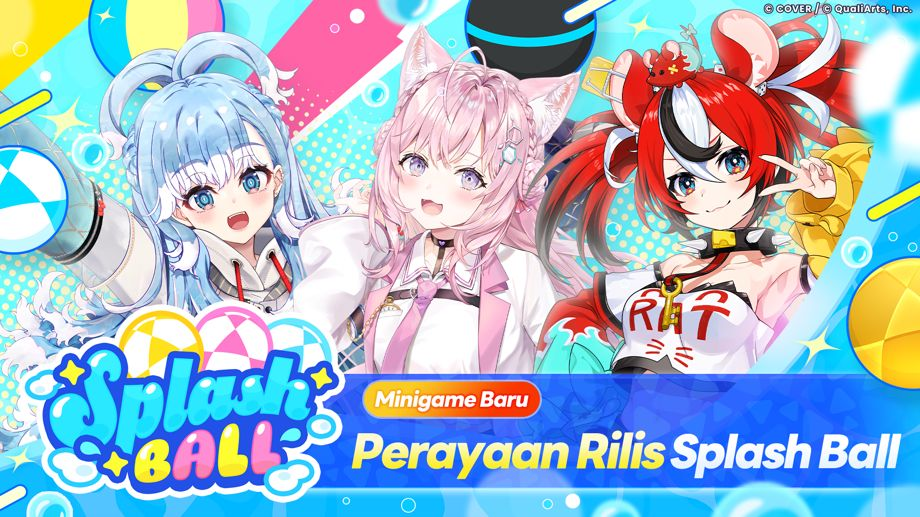

2026-09-29 11:00:00Area Baru "Soda Pop Lagoon" Hadir!
◆Tanggal Pembukaan Area Baru
2026-09-29 11:00:00~
◆Syarat Memulai Event
・Selesaikan Cerita Utama Chapter 2, Episode 12 "Sensasi Tanpa Akhir"
Ringkasan area baru "Soda Pop Lagoon"

Soda Pop Lagoon adalah area baru yang terdiri dari lautan yang luas dan hamparan pulau.
Pemain bisa berkeliling di arean menggunakan "Boat"
Seiring berjalannya cerita, area yang bisa dijelajahi juga akan makin luas.
Fitur baru "Memancing" telah hadir!

"Memancing" adalah fitur baru di mana pemain bisa memancing ikan di titik tertentu di dalam area.
Jenis ikan yang bisa dipancing akan berubah tergantung Umpan, Lokasi, dan Waktu.
Memancing ikan akan mendapatkan hadiah dan informasi dari ikan yang sudah dipancing akan tersimpan di Ensiklopedia.
Selain itu, pemain akan mendapatkan hadiah yang berbeda, tergantung pada jenis ikan yang ditangkap.
*Fitur "memancing" bisa dibuka dengan cara menyelesaikan Cerita Utama Episode 3 "Soda Pop Lagoon"
Minigame baru, "Splash Ball" telah ditambahkan!

Splash Ball adalah minigame multiplayer di mana pemain akan dibagi menjadi 3 tim, dengan 3 orang tiap tim, dan akan saling berkompetisi.
Pemain bisa mendapatkan skor dengan cara memasukkan bola ke dalam gawang lawan menggunakan boat.
Pemain akan mendapatkan hadiah berdasarkan peringkat tim dan skor individual.
*Minigame baru "Splash Ball" bisa dibuka dengan cara menyelesaikan Cerita Utama Episode 3 "Soda Pop Lagoon"
*Jika ingin bermain secara Multiplayer di Private Room, selesaikan Misi Utama Chapter 1, Episode 4 "Legenda Yang Terhubung"
Catatan Penting
・Konten dan periode event dapat berubah sewaktu-waktu.